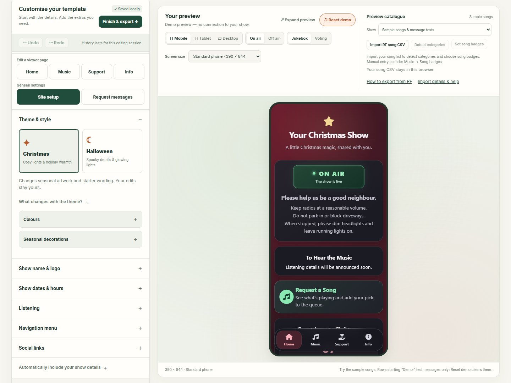

Lights on Sunset
Package: Festive-RF-Template.zip
- Christmas starter
Festive RF Template.html- Halloween starter
Halloween RF Template.html
Use the visual customiser, or edit the ready-made HTML yourself. Choose Lights on Sunset or Compact console: two distinct layouts, each with Christmas and Halloween themes.
Select Christmas or Halloween and a template. Click either thumbnail for a centred phone preview with detached On air / Off air controls, then close it to keep choosing. Select Set up my show to enter your details, or Straight to editor. The wizard uses the season you already chose. Finish with Apply & open editor. Tick Take a quick tour after setup if you want the optional tour; it starts unchecked whenever setup opens. Repeat setup never starts the tour automatically.
Season buttons have the same appearance in both editors. Compact console keeps separate seasonal designs; Lights on Sunset keeps its existing theme-switching behaviour. Existing saved designs resume without repeating onboarding.
Music → Player & queue has an optional maximum queue length display for both templates. It uses RF’s {QUEUE_DEPTH} value, where 0 means unlimited; it does not change any request limits. The local demo uses 10. You can edit the wording. RF dynamic tags ↗
Choose menu icons under Site setup → Navigation menu, message icons under Request messages, and other icons beside their features. All use the Font Awesome 6.6 Free library. Browse Christmas, Halloween, Lights & magic, Music & media, Social links or General, or search across All. Playlist and resource cards have their own choices from that same library. Template defaults preserve the original appearance.
Lights on Sunset keeps the original Home, Music, Support and Info layout. Compact console starts on Music, with separate Info and Support views. Change template opens illustrative seasonal previews; selecting a saved design resumes it.
Compact console keeps independent Christmas and Halloween settings and catalogues. Its settings backup contains both seasons; HTML export includes only the selected season. Lights on Sunset keeps its established theme-switching behaviour and old backup format.
Undo / Redo is shared across templates. Each saved design has its own history for this browser session, including setup Apply, resets and applied catalogue imports. Reloading clears history but retains saved settings. Text fields retain native text undo. Copy show details lets you review selected groups before replacing those fields in the destination; designs remain independent.
Compact console offers colour presets and advanced colours, date-and-hours tiles, and a coordinated seasonal decoration set. Gentle motion can be disabled and always respects reduced-motion preferences. Its Info page holds visitor guidance and playlist links; the off-air video is under Music. The original Home-specific and included-artwork instructions below apply to Lights on Sunset.
Reset to defaults resets only the current design after confirmation. Compact console’s other season is retained. Reset demo clears preview interactions without resetting the design. Use Download settings backup in Lights on Sunset or Back up both seasons in Compact console before transferring work; imported CSV files remain separate.
Choose Set up my show on the template selection screen, or Set up this design in the header. Four short steps use your chosen season and cover your name, welcome message, logo, dates and hours, FM and PulseMesh listening, and song artwork. The Music & listening step lets you choose a download button, a display-link button, or both. Review your choices, then select Apply & open editor. The optional tour checkbox is on this final review step.
Reopening shows your current template and season and starts with its settings; it does not ask you to choose a template again. Use Change template to compare or switch layouts. Back keeps your answers. Skip restores the values present when you entered that step. Cancel setup, close or Escape applies nothing. Your other settings are preserved; unedited defaults follow the chosen theme. Everything remains editable afterwards. These details customise your page; they do not configure FPP schedules or activate PulseMesh.
Prefer to explore? Choose Straight to editor, then use Help → Take a quick tour for an explanation of the controls. Import your RF song list afterwards to set up category filters and NEW sashes.
Choose Finish & export above the settings. It opens fields needing attention, or takes you to Copy HTML and Download my HTML. If these buttons are disabled, the explanation and links to the affected fields appear beside them. HTML filenames include your show name and Christmas or Halloween. Settings are saved only in this browser, not synced between devices.
Older browsers: without CSS :has(), the viewer uses one scrollable page with section links. Category and NEW filter buttons are hidden; RF still controls requests, votes and availability. The normal layout remains on supported browsers. A fallback layout check does not establish compatibility with every old browser or with RF’s own scripts.
Read the illustrated quick-start guide offline — all its screenshots are included in the file.
Lights on Sunset and Compact console are supplied viewer layouts by christmasdave. The customiser personalises either layout. The exported viewer uses your own show name.

On your first visit, choose a template and season. Select Set up my show for guided setup or Straight to editor to explore. Tick Take a quick tour after setup at the end of setup, or reopen the tour from Help at any time. The tour preserves your settings, demo interactions and previous editor/preview position. Returning users resume their saved design.
Using the customiser: choose a theme, enter your show details, open each section you need and check the preview. Most optional features start off. In Lights on Sunset, the Christmas countdown, main-screen visitor guidance and Home Music link start on. Compact console starts with seasonal decorations and Info guidance on; main-screen guidance and both countdowns start off. Copy HTML or Download my HTML when you are ready. Download a settings file too: browser storage stays on that browser and can be cleared.
Editing by hand: extract the ZIP, then open the Christmas or Halloween HTML starter for your chosen layout in a plain-text editor such as VS Code or Notepad. The files in each package are listed below. Keep a backup. A browser cannot display the real song list when this file is opened locally; Remote Falcon supplies it after installation.
Package: Festive-RF-Template.zip
Festive RF Template.htmlHalloween RF Template.htmlPackage: Compact-Console.zip
Compact Console Christmas.htmlCompact Console Halloween.htmlEach ZIP contains only its own layout’s two starters. Keep the extracted guide beside editor.css and the docs folder. README.html embeds its own screenshots and styling. The guides work offline; live RF content, external links, hosted fonts and icons require an internet connection.
The customiser’s On air / Off air and Jukebox / Voting switches only affect its demo. Your exported page includes every state; RF controls what visitors see. It does not configure FPP, RF modes, schedules, playlists, location rules, play limits or PulseMesh.
For platform behaviour, follow the official RF Viewer Page documentation. Use modern Safari, Chrome, Edge or Firefox; the viewer’s CSS uses :has().
The page tabs match your chosen layout: Home, Music, Support and Info in Lights on Sunset; Music, Info and Support in Compact console. Selecting one opens that page in the preview. Site setup holds shared settings; Request messages holds messages visitors see when requesting a song or voting. These two leave your preview on its current page. Using the preview’s own navbar does not change the editor area.
Edit a viewer page groups the visitor-page buttons; General settings groups Site setup and Request messages. Music is the starting page in Compact console. Under Site setup → Theme & style, choose your season, colours and seasonal decorations. Show name & logo, Show dates & hours, Listening, Navigation menu and Social links each have their own section. On Music, Song selection holds request/voting headings and unavailable-song wording; Player & queue holds headings, empty states and counters; Off-air content holds the closed-show message and About link. Filter labels live with Categories and Song badges. The main-screen Welcome, Announcement, Off-air video and countdown controls live under Home in Lights on Sunset and Music in Compact console. Extra-information cards live on Home in Lights on Sunset and Info in Compact console. Shared-setting shortcuts open the single editor for each value.
Request messages edits titles and short explanations. Success, failed requests and already-playing messages have separate Jukebox/Voting explanations. RF decides when feedback appears and how long it stays; editing text does not change request rules. Keep titles and explanations brief and preserve the meaning of the condition. Each message has a preview button: it switches the demo to On air and the appropriate music mode without changing your imported catalogue. Both-mode messages use the current mode unless you choose a Jukebox/Voting preview. These buttons never send an RF request. See when RF shows each message.
Use the collapsible Automatically include your show details help below the settings for linked-text examples. In wording fields, {show}, {charity}, {season} and {frequency} link to your settings. Reset wording restores one field. Unchanged text follows the selected theme; personalised wording remains. Navigation labels have a 16-character limit. Under Site setup → Navigation menu, untick Show text labels below menu icons for icons-only navigation; screen readers still receive the button names. Under On-air & off-air wording on the main-screen tab, you can enable a gentle glow on the On air dot. It respects reduced-motion preferences. The header’s What’s new button opens the public update history. Check long wording at compact-phone size.
For manual edits, find the visible text and change it without altering surrounding RF tokens, IDs or classes. Shared titles appear more than once, so update their copies together.
Search the HTML for the visible text below. Edit text inside tags, keeping IDs, classes and RF elements intact. Escape an ampersand as &, a less-than sign as <, and double quotes inside attributes as ". Text can appear in multiple mode containers: change every matching copy.
| Detail | Where to edit |
|---|---|
| Show name | Replace every occurrence of Your Christmas Show or Your Halloween Show, including the title and Info introduction. |
| Welcome | Find A little Christmas magic, shared with you. or A little spooky magic, shared with you. Compact console also has an optional cc-eyebrow paragraph for its tagline. |
| Dates and hours | Replace To be announced throughout the document. Lights on Sunset repeats its schedule on Home, Music and in the FAQ; Compact console repeats it on Music, Info and in the FAQ. In Compact console update the small cc-date-tile label as well as its adjacent day and hours text. |
| FM | Add has-fm has-listening to the feature container below. Replace every 88.7 value with your frequency. |
| PulseMesh | Add has-pulsemesh has-listening once your show is configured. The starter includes the official download link. To add a display-link button, choose that option in the customiser before downloading, or update each listening card and the listening FAQ together. |
| Other listening instructions | Edit both live listening cards (Home in Lights on Sunset, Music in Compact console) and the info-listening FAQ. Add has-listening so the fallback is suppressed. |
| Colours | Lights on Sunset: find COLOUR SETTINGS; section washes use RGB triplets and surfaces use hex. Compact console: edit the final #show-options.compact-console variable block, including --cc-background, --panel, --gold, --text and --text-secondary. Keep text readable against its background. |
Feature container: find id="show-options" and add optional feature names to its existing class attribute. Keep every existing layout/season class. Compact console needs its compact-console and cc-* classes; do not replace the whole attribute or put these switches on the body.
Preserve RF’s curly-brace elements, including {PLAYLISTS}, {NOW_PLAYING} and dynamic-container attributes. Keep the los-menu navigation names and request-message IDs. Do not add custom JavaScript. You can configure optional features in the customiser, download the complete HTML, then continue editing by hand.
Use a direct, public HTTPS image URL, not a sharing-page URL or local path. RF’s Account → Image Hosting → Copy Image URL is one option; follow its image-hosting instructions for supported files and current limits. Paste the URL into Logo image link after choosing My own logo. Use an image you are allowed to share and check that it loads when signed out of its host.
For manual Lights on Sunset edits, find SHOW BRANDING and replace the seasonal icon inside share-brand. In Compact console, insert the image inside cc-header share-brand, before its h1. Use <img class="show-logo" src="https://your-host/your-logo.png" alt="Your show logo">. Keep the show name, welcome and existing decoration markup.
In the customiser, paste exact RF sequence names, one per line. RF display titles may differ. These names control the diagonal NEW sash in both modes. The customiser shows each name as a clearly labelled example; it does not add songs to RF.
Turn on New this year if you also want that filter. Do not create a New RF category. Remove a name later to retire its sash.
Manually, find NEW SONG ASSIGNMENTS. Replace :not(*) inside all four :is(...) lists with the same sequence-name selectors:
.jukebox-list:is([data-key="Exact sequence name"], [data-key="Another sequence"]),
.los-song-list > .cell-vote-playlist:is([data-key="Exact sequence name"], [data-key="Another sequence"]),
.los-song-list > .cell-vote-playlist:is([data-key="Exact sequence name"], [data-key="Another sequence"]) + .cell-vote,
.cell-vote-row:has(> .cell-vote-playlist:is([data-key="Exact sequence name"], [data-key="Another sequence"])) {Leave the declaration block after these selectors intact. Add has-new-songs to the feature container to reveal the filter. For names containing quotation marks or backslashes, use the customiser to handle CSS escaping.
Under Music → Song appearance, choose Album artwork, Category icons or No artwork for Jukebox and Voting song lists. Control Show album artwork in Now Playing separately. Existing designs keep their previous artwork choices. Titles, NEW sashes, votes and availability hints remain visible; nothing removes artwork from RF. How to add album artwork in RF.
Category icons use the shared Font Awesome picker. Choose one for each category; songs without a category and categories without a choice use a music note, including songs without album covers. Keep every category in RF’s order under Music → Categories, even if its filter button is hidden. Icons also work with all filter buttons off. Renaming or reordering a category carries its icon; removing it removes its assignment. Detect categories retains choices for matching names. If an imported preview has mismatched categories, it uses music-note icons until the lists match. Setup offers the artwork modes; individual icons are edited under Music afterwards.
Two independent switches show or hide artist names in the song list and in Now Playing, Up Next and the request queue. Both default on and work with every artwork choice. Missing artist information leaves no blank artist line. Choices are included in setup, settings backups, Copy show details (Music) and Undo/Redo; RF artist data is unchanged.
For manual editing, add hide-song-artists and/or hide-queue-artists to the existing id="show-options" element’s class list. Remove those classes to show artist names again. The shared artist CSS is already included in both starter templates.
Open How category filters work in the import window or Music → Categories for a short explanation and the official RF category guide. Import review shows how many songs have no category and recommends assigning every song one. This advice does not block import. Opening or closing the help keeps your pending import choices.
Use Detect categories beside Import RF song CSV to review names from your imported list, then choose Apply categories. You can also rename the starter categories and add or reorder rows. Enter the names in the same order as the non-empty category sections visible on your RF viewer page. Category names and order must match the categories visible on your RF page. Detection finds names but cannot read RF’s saved category order. Import your song list to get started. These buttons filter the song list.
In RF, assign categories to songs you want included in named filters. Uncategorized songs remain under All and, when marked NEW, New this year. The Categories tab’s Save As Category Order saves the order of category sections; song-title sorting controls songs within those groups. A column sort alone may only be a preview until saved. Follow RF’s category-order instructions.
Category row 1 selects RF’s first category, row 2 its second, and so on, even when a row’s button is hidden. Labels do not choose the songs: if RF has Christmas, Jazz, Rock in that order, labelling row 1 “Rock” still selects Christmas. Keep all rows in RF order and untick Show button for any filter you want to hide. The HTML/CSS filter uses section position, not category-name matching. If RF omits an empty category, later positions move. Recheck the live viewer after adding, removing, hiding or emptying categories. Do not include empty categories. Uncategorized songs are separate from the named sections and do not shift their positions. Never change FPP indices for filtering. If your category structure changes frequently, leave category filters off and use All/New.
Keep all categories shown on your RF page in this list, in the same order. Use Show button to choose which filters visitors see. Hiding a button keeps its songs under All and, when tagged, New this year. For All and Non Christmas only, keep both category rows and untick Show button for Christmas. Remove a category only when it is no longer visible on your RF page. One category button is supported, as are several or none. With no category buttons or NEW filter enabled, the bar is hidden. Old links to hidden buttons show All within Music.
If this list differs from the imported CSV, the preview explains the mismatch and disables category buttons; All and New this year still work. Detect categories, edit the list or import a fresh CSV to recover. This is export advice, not an export error: your saved CSV may be older than your real show.
For manual editing, the two starter filters match the two starter names in that file. The feature switch is has-categories. For a different number/order of categories, generate the matching CSS and links in the customiser before editing manually.
RF sorts votes within its category sections. A category’s first song is not necessarily the overall vote leader. Availability and play limits come from RF, not the template; scheduled playback can count towards a nightly limit too.
In Lights on Sunset, enable Site setup → Show dates & hours → Show schedule on Home while on air for a compact schedule before listening instructions. It starts off. Compact console always includes its dates-and-hours tiles on Music and Info; Music → Welcome links to the shared schedule settings. Both reuse Site setup → Show dates & hours, including holiday exceptions. Off-air schedules remain visible.
Schedules are visitor information; they do not calculate tonight’s hours or configure FPP. For manual files, configure placement in the customiser before downloading, then keep every schedule copy consistent when editing.
Enable the notice under Home in Lights on Sunset or Music in Compact console. Add a short title and message for a weather update, technical issue or special evening. It appears on that main screen in both music modes, on air and off air.
Manually, find id="show-notice", replace Show update and the paragraph immediately after it, then remove hidden from the aside. Put hidden back when the announcement ends. This message cannot open or close your show.
Open Support → Support cards. Use Add another support card for up to five separate cards. Each has its own name, Support-page description, image, link and button wording. A charity might say “Donate to our local brigade”; a podcast might say “Listen to our stories”. New cards start with neutral Visit / Discover wording. Existing saved wording is kept.
Each card has main-screen and Info placement switches (the main screen is Home in Lights on Sunset, Music in Compact console). These add a small linked card to those pages. Under that card’s Home & Info teaser (Music & Info teaser in Compact console), edit its heading and short helper: for example, “Support our local brigade” / “Tap to donate”, or “Discover our bedtime stories” / “Tap to listen”. These fields affect only that card’s Home/Info teaser; its full description and button are on Support. Changing one card never changes the wording on another. The {charity} shortcut inserts the current card’s name, even if it is a creator rather than a charity.
Enter a full secure link beginning with https://. A bare www.example.org address is completed when you leave the field. Check every destination before publishing. Home and Info placements start off; cards appear on Support when Show support cards is enabled.
Under Support → Support page, turn off Show Support in menu to hide its navbar button. This hides only its menu button: the page, settings and existing direct links remain. Home and Info cards still open their own recipient links. Choose those placements for cards visitors should find through the remaining menu. You can still open Support from the editor to preview and edit it, then restore its menu button at any time. A shortcut to that control also appears under Support → Support page.
For manual edits, find all share-donation blocks and replace the first card’s name, text, accessible labels and destination links in each copy. Keep the navbar’s Support link unchanged. Add has-donations to show-options to enable it, plus has-donations-home for the main screen and/or has-donations-info for Info. Compact console retains that internal home class name for its Music placement. Generate additional cards in the customiser before making manual edits.
Every image field expects a direct, public HTTPS image URL, not a website, Drive sharing page or local file. RF’s Account → Image Hosting → Copy Image URL is a convenient option. Check RF’s current upload limits and keep files small for mobile visitors; PNG or WebP is useful for transparent logos.
| Image | Suggested source | Display |
|---|---|---|
| Resource image | 200 × 200 px; a simple logo works best | Contained in a 44 × 44 CSS px icon space. |
| Show logo | 600 × 400 px, or 600 × 600 px for a square logo | Lights on Sunset: up to 280 × 180 CSS px. Compact console: up to 200 × 120 px. |
| Support card image / logo | 600 × 400 px; square logos also work | Lights on Sunset: up to 320 × 200 CSS px on Support, 72 × 64 px in teasers. Compact console: 80 × 80 px on Support, 44 × 44 px in teasers. |
| Extra-information card image | A simple square image, around 200 × 200 px | A small contained square to the left of the text. |
Images use object-fit: contain: nothing is cropped or stretched. An image with a different shape leaves space around it. Use a clear logo or simple image, not a poster full of small text; put essential information in the text fields. Leave some space around the artwork. Check it at the compact-phone size.
To add a donation image manually, replace the heart icon in the Home/Info donation cards with <img class="donation-image donation-image--compact" src="https://your-host/charity.png" alt="">. Add <img class="donation-image" src="https://your-host/charity.png" alt=""> inside the Support donation card, before its text wrapper. The adjacent charity name provides the image’s context.
Open Home → Extra information in Lights on Sunset, or Info → Extra information in Compact console. Enable the section and add up to five cards, visible in every mode and availability state. Expand a card to edit, move or remove it. For example: a selfie-wing photo spot, children’s activity or visitor instructions. Each card has a heading, message, optional image and optional HTTPS link with a short button label. Images fit in a small square beside the text; cards without images use the full text width. Use the show notice for current announcements; these cards are for ongoing information.
When editing manually, insert the following within home-panel in Lights on Sunset (at EXTRA HOME CARD), or within info-panel in Compact console. Generate image/button layouts in the customiser first if needed:
<div class="section-card home-extra"> <h2>Try our selfie wings</h2> <p>Find your colour, strike a pose and share a little magic.</p> </div>
Enable Show visitor guidance on the main screen and choose Above the header, Below the header or Below On air. The header includes your logo, show name and welcome text. Main-screen guidance appears only while on air, in either music mode. Compact console also shows the same wording on Info. Leave both message fields empty to remove the guidance.
Under Info, open Frequently asked questions. Each row shows its question; expand it to edit the answer, move it or remove it. Add question opens a new editable row. Answers are plain text; line breaks are preserved. Ordinary answers also offer an optional link label and HTTPS URL, for example a nearby-display map. Shared schedule and listening answers keep their own linked content. The schedule and listening answers remain linked to their settings above so times and frequencies stay consistent. Their question titles and optional extra details are editable here. If removed, use Restore schedule/listening answer to add them again.
For manual edits, find info-faq. Each question is a faq-item with a strong question and a paragraph answer. Keep id="info-listening" on the listening question so the Music page’s listening link still works. In exported HTML, answers are static: update schedule and listening details everywhere when editing by hand.
Home → Link to Music on Home can hide the on-air request/voting shortcut. Its text is kept, and the navbar and Music headings are unchanged.
Seasonal countdown (Home in Lights on Sunset; Music in Compact console) offers a separate switch for each theme. Christmas keeps your existing choice; Halloween starts off. RF updates the countdown using its built-in to-christmas-days or to-halloween-days hook. The card stays in the same place on the main screen in either music mode and on/off air. The local example uses your browser’s date; no custom script enters the export. Personalised headings are retained when changing themes.
Site setup → Listening → Show FM reminder at the top of Music switches the frequency reminder independently of Home and the listening FAQ. Enable and set FM under Site setup → Listening.
Under Music → Player & queue, edit the empty messages and optional Queue instructions. To include the maximum queue length, write The queue holds up to {QUEUE_DEPTH} songs. in Queue instructions or Request instructions. Older {queueLimit} and {queuelength} wording still works. The demo uses 10; RF supplies your real maximum. This does not change that limit. If RF uses 0 for unlimited, choose appropriate wording instead.
Music → Player & queue also has optional queue-count and votes-remaining displays, both initially off. Queue count uses {QUEUE_SIZE} and includes Up Next, even though the Request Queue list excludes it. Votes remaining uses {VOTES_REMAINING} and RF’s generated text, collapsing when RF supplies no value. The local demo uses a five-vote allowance; it does not read or change RF settings.
Music → Display access code edits the heading and instructions above RF’s {LOCATION_CODE} input. RF’s {location-code-dynamic-container} controls when it appears. Enable code-based access in RF only if you want that restriction; this editor does not configure access. All ten documented feedback messages and RF’s inline location recovery remain supported. The song time-remaining timer remains omitted. See RF’s supported tags and containers.
Reset demo clears local requests and votes. Imported titles, artists and artwork are layout examples, not live playback.
PulseMesh: under Site setup → Listening, or the wizard’s Music & listening step, choose Download app only, Listen on PulseMesh only or Both buttons. Download opens the official device-routing page. Listen needs the full public HTTPS display link from your PulseMesh dashboard, reused on Home and in the listening FAQ. Choose a Web Player link for browser listening, or a Smart link for app/browser routing; display-code links require a supported PulseMesh plan. Read the display-link guide and web-player help. All links open a new tab, preserving RF. Turning an option off keeps your link and wording. Existing designs keep the download button. The FAQ separates FM, each PulseMesh link and your extra instructions, including line breaks. These buttons do not configure PulseMesh or bypass its rules; see the setup guide and usage help.
In phone/tablet previews, drag up or down with your mouse to scroll, or use the mouse wheel. A drag will not choose a song; a normal click still does. Native touch and desktop-preview interactions remain unchanged. This feature is only in the customiser and adds no script to your RF page.
Lights on Sunset keeps one saved design. Switching between Christmas and Halloween updates seasonal starter wording and defaults while retaining personalised content, custom colours and category names. Compact console keeps a separate saved design, catalogue and editing history for each season. Use Copy show details to reuse selected information between seasons or templates. Reset colours applies the current theme or preset’s palette. The editor’s light/dark switch only changes the workspace. Each season has its own countdown switch; Halloween starts off.
The preview keeps working while you enter incomplete fields. Unsafe or incomplete image links are omitted from it. A compact fields-need-attention summary opens the error list; select an error to go straight to its field. A bare www. address is visibly completed with https:// when you leave a link field. Other invalid URLs remain errors. Export stays unavailable until the errors are fixed or the affected feature is disabled. Colour contrast hints are advisory. A valid-looking image URL still needs to point to an actual publicly readable image.
Download settings backup also saves unfinished work. Loading a compatible backup first asks before replacing your design. You can download your current settings, then Load backup, or Cancel to change nothing. Closing the confirmation or pressing Escape also cancels. Invalid files never replace your settings. Older Lights on Sunset settings migrate automatically and retain personalised values. Its backup contains the shared design; a Compact console backup contains both seasonal designs. Imported song catalogues are private browser data and are not included in settings backups. Browser storage is local, so keep your settings backup and original RF CSV as portable copies.
Sample songs queue or receive votes normally. Rows starting Demo: trigger a specific message only, such as Already voted, Queue full or a play-limit message. The relevant cases change with Jukebox/Voting. They never queue a real song. Reset demo clears demo interactions; it does not reset your settings.
Lights on Sunset: under Site setup → Show name & logo, choose a simple seasonal icon, included artwork or your own logo. Each theme offers three included logos. Combine artwork with an editable show name, or hide the name if it is already in your uploaded image. Under Site setup → Theme & style → Seasonal decorations, optional artwork follows the selected navbar button. These WebP files are included in the Lights on Sunset ZIP and hosted with the project.
Compact console: choose a styled show name, an icon above the name or your own logo. Under Site setup → Theme & style → Seasonal decorations, choose seasonal decorations and gentle motion. Christmas uses lights, festive corners and a candy-cane navbar border; Halloween uses webs, a hanging spider and a violet navbar border with small cobweb corners. Switch seasonal decorations off to keep the plain navbar border. These decorations use CSS and need no image upload. Both templates respect reduced-motion preferences.
Visitor guidance is edited under Home in Lights on Sunset and Info in Compact console. Use Show visitor guidance on the main screen with Above the header, Below the header or Below On air. The header includes the name/logo and welcome text. Main-screen guidance appears only on air in both music modes. Compact console’s Info guidance remains available off air too. Existing Lights on Sunset designs keep guidance below On air; Compact console’s main-screen guidance starts off.
Heading and Visitor message share the wording across placements. Line breaks are preserved; leaving both blank removes the card. For manual editing, change each neighbour-message and its adjacent title, keeping native RF availability containers. To change placement, generate it in the customiser before editing.
Under Music → Song badges, select Moving heads for songs from your imported CSV or enter exact RF sequence names in the separate manual list, one per line. This adds a small Moving spotlights badge to those song-list cards in both Jukebox and Voting. It works independently of artwork, category filters and NEW assignments. NEW keeps its corner sash. When both are selected, the song also has a separate Moving spotlights pill beneath its details.
Apply saves your choices. Cancel, X and Escape leave existing assignments unchanged. Names outside the imported CSV are retained. Clear badges clears both pending badge lists, including those names; closing without Apply discards that change. Up to 200 names per badge are supported. The label describes your sequence; it does not operate lights, create an RF category or change request rules.
Manual HTML: select these badges in the customiser before downloading. The exported CSS contains a MOVING HEADS ASSIGNMENTS block. Exact names appear in several selectors, for the Moving spotlights selection. If editing names by hand, update all occurrences in that block. NEW keeps its own assignments; re-export after changing either selection for the simplest manual workflow. The starter files have no badge assignments.
Get your CSV: sign in to RF’s Sequences page and choose Export at the top. Back here, choose Import RF song CSV and select the downloaded file. How to export from RF opens a short reminder beside the catalogue controls and under Music → Song badges. See also RF’s sequence guide.
Open Preview catalogue → Import RF song CSV and choose a sequence export from RF. The preview uses its exact sequence names, display titles, artists and artwork. The CSV is read locally for review and saved separately in this browser only after you confirm the import; it is not uploaded to this project or included in the exported HTML. Artwork loads directly from the HTTPS image hosts listed in your file. Keep the original CSV: a settings backup does not include it.
The Import song list window opens for review. Search by title, artist, category or exact RF name, optionally mark each song as NEW, Moving heads, both or neither and set up categories, then choose Import & apply choices. Until then your current catalogue, preview and settings stay unchanged. Cancel import, the X and Escape discard the entire pending import, even after selecting songs or reordering categories. All songs are imported, regardless of badge choices. Once imported, Set song badges reopens the same choices with an Apply choices button. Each badge has its own checkbox and count. Clear badges clears both pending badge lists, including manual names outside the CSV. Closing without Apply discards that change. The same window shows current and detected categories; enable Set up category filters from this CSV, check their order against RF, then apply. Closing it without applying leaves your previous list unchanged. Reopen it from Preview catalogue → Set song badges or Music → Song badges → Choose from imported songs. The Song badges section shows both selection counts and the Show “New this year” filter option. Existing manually entered names outside the CSV are kept. You can still type or edit exact names under Music → Song badges → Enter names manually. Choices add NEW sashes and Moving spotlights badges to your exported RF page.
Detect categories opens a review of detected names. Known categories keep their order and Show button choices; newly detected categories are appended with buttons enabled. Review the order, then Apply categories to open Music’s category settings, or Cancel to leave your work unchanged. This action does not change NEW selections. The same setup is available inside the song-badge picker. Its summary shows both badge counts and any pending category filters. Apply choices saves them together; Cancel applies none.
Import details & help shows the file name and detected categories. CSV exports do not include RF’s saved category order, hidden-song information, NEW status, live votes or current availability/play limits. The group column is separate from category. Confirm order against RF before exporting. Missing or invalid artwork is labelled in the preview. The file stays in this browser and is separate from a settings backup; keep your original CSV.
With an imported catalogue selected, NEW sashes apply only to matching exact sequence names already in that file. No extra demonstration songs are inserted. A warning identifies unmatched names. Now Playing uses one imported song’s artwork as a labelled layout example; it does not report live playback. Song clicks still create local demo requests or votes; they cannot reach your show. Switch back to Sample songs & message tests to try the unavailable example and feedback messages. Remove imported copy, also in Import details & help, clears the local catalogue without changing your show settings or original CSV.
Supported files contain 1–2,000 songs and are smaller than 2 MB, with the RF columns name, displayName, artist, group, imageUrl, category. Extra columns are ignored. Invalid files leave the current catalogue untouched. Up to 12 non-empty category filters are supported. Songs without a category stay under All and appear under New this year when marked NEW; named category filters exclude them. In Category icons mode they use the icon chosen under Music → Song appearance → Songs without a category, which defaults to a music note. Do not add a placeholder category row for them: only named RF categories count towards the order.
The customiser uses sample songs or an imported CSV snapshot, with local demo queue entries and votes. It does not validate your RF configuration or simulate playback. External links are disabled only inside the demo. A real RF draft preview is a separate compatibility check.
These sections start off. Switching them off keeps your entries. All visitor links open a new tab; the local preview blocks external navigation. Use full HTTPS URLs and check their destinations before publishing.
You can enable features in the customiser before downloading, then continue editing by hand. In a starter, add your own cards using the examples below. In Lights on Sunset, put playlists inside Music’s off-air container and the video card inside Home’s off-air container. In Compact console, put playlists inside info-panel and the video card inside Music’s off-air container. Facts/resources belong inside info-panel in both templates. Do not remove RF’s surrounding dynamic containers. A playlist FAQ answer can reuse the same links inside info-faq. When editing manually, update both copies yourself.
<section class="section-card visitor-playlists">
<h2>Browse the Playlists</h2>
<div class="visitor-links">
<a class="visitor-link" href="YOUR_HTTPS_PLAYLIST_URL" target="_blank" rel="noopener noreferrer">
<span class="visitor-link-icon"><i class="fa-brands fa-spotify" aria-hidden="true"></i></span>
<span><strong>Spotify Playlist</strong><span class="visitor-link-description">Hear the show songs.</span></span>
</a>
</div>
</section>For a resource card, use the same link markup with a resource title and fa-solid fa-link icon. For a YouTube button, use:
<a class="info-pill youtube-link" href="YOUR_HTTPS_VIDEO_URL" target="_blank" rel="noopener noreferrer"> <i class="fa-brands fa-youtube" aria-hidden="true"></i> Watch our show </a>
Put that button in an off-air main-screen section-card compact show-preview with a heading and paragraph, or below the Info introduction. For Quick Facts:
<section class="section-card info-card quick-facts">
<h2>Quick Facts</h2>
<div class="visitor-facts">
<div><strong>Your value</strong><span>Your label</span></div>
</div>
</section>Duplicate a link or fact row for more entries. Replace the instructional URL placeholders before using these snippets.
Seasonal countdown (Home in Lights on Sunset; Music in Compact console) remembers a separate enabled state and format choice for Christmas and Halloween. Days only is the default. Choose Days, hours, minutes and seconds for four readable tiles. Both formats use the regular viewer font and card style. Personalised headings and your colours are retained. The card appears in both music modes, on air and off air.
These use RF’s native December 25 / October 31 calendar countdowns in the visitor’s browser time zone. They do not count down to your schedule or tonight’s start time. The native values stay at zero on the holiday and roll toward the next year afterward. The demo illustrates the same calendar calculation; only RF supplies live viewer updates.
If a countdown is enabled in your manual HTML, find seasonal-countdown. If absent, generate it in the customiser first. Remove that whole section to hide it. Add countdown-full to the section and replace its countdown tiles with four days-count divs, each containing a strong with one unique ID: to-christmas-days, to-christmas-hours, to-christmas-minutes, to-christmas-seconds, followed by a span unit label. Halloween uses to-halloween- instead. Keep every ID unique. The customiser can generate either countdown format for you.
Adapted from Dynamic Menu by Matt Orelup, with further design and feature development by Lights on Sunset.
The customiser supplies both layouts with shared editing and export tools. The adaptation adds festive surfaces, floating navigation, mobile layouts, request feedback, NEW sashes, filters, notices, listening options and this community customiser. Personal show content is excluded.
Distributed under GNU GPL version 3, without warranty. Keep the attribution, modification notice and licence when redistributing. See CREDITS.md for lineage and third-party components. Font Awesome icons load from cdnjs under Font Awesome’s licences. This independent community project is not endorsed by Remote Falcon or the original author.
In Compact console, change the small line above your show name under Music → Welcome → Tagline. Leave it blank to hide it. Each season keeps its own wording.
Choose Header appearance directly below Show name in setup or the editor. Compact console offers Styled show name, Icon above show name or My own logo. Lights on Sunset keeps its seasonal icon, included artwork and logo choices. Both use the same searchable Font Awesome 6.6 Free icon library, including Christmas and Halloween choices. Setup icon changes stay in the draft until Apply.
In Site setup → Show name & logo → Show-name style, choose Default, Rounded, Elegant, Festive or Spooky. The sample beneath the selector shows your own name in that font. You can also choose a separate name colour. Use template colour restores the normal text colour, or the accent when the name is combined with artwork.
Only the name in the template’s main header changes. Lettering inside your own uploaded logo cannot be edited here. Hiding the main-screen name keeps your choices for later. These options are also in the first wizard step.
Optional fonts load from this project’s public assets, with readable fallbacks. They and their original licences are included in the manual package; see font credits.
For a shorter walkthrough, open the illustrated Quick-start guide. The customiser’s Help button also offers the tour and this detailed guide.
Social links
Open Site setup → Social links. Enable the main screen, Info or both, then add up to eight links. Each needs a short label, an icon and a full HTTPS destination. The heading and message are optional. Reorder or remove links using their controls. Social links start off; hiding them retains your entries.
The main-screen card follows the optional countdown on Home in Lights on Sunset and Music in Compact console. The Info card follows its introduction. Both placements remain available on and off air. Links open a new tab and have visible labels as well as icons. Facebook, Instagram, YouTube and TikTok are grouped under Social links in the shared Font Awesome 6.6 Free picker. The existing Info YouTube button is independent.
Manual HTML: configure the links before downloading, or add a card using the example below inside
home-panel(Lights on Sunset),music-panel(Compact console) orinfo-panel. Place it outside the RF dynamic containers for both on-air and off-air display. If using two placements, update both copies when editing manually.<section class="section-card social-card"> <h2>Follow the lights</h2> <div class="social-links"> <a class="social-link" href="https://example.org/your-page" target="_blank" rel="noopener noreferrer"> <i class="fa-brands fa-facebook" aria-hidden="true"></i> <span>Facebook</span> </a> </div> </section>Replace the example URL with your own public page. The starters include the shared styles; no custom script is required.